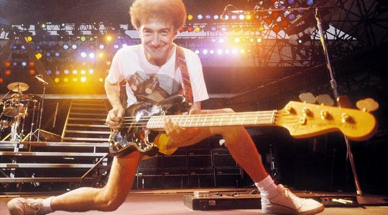

John Deacon
Galería
|  John Deacon con su bajo característico Fender Precision. | Roger Taylor, Freddie Mercury, Brian May, John Deacon (QUEEN). |
| Es pianista, guitarrista y bajista. | El 1 de marzo de 1971 Deacon hacer parte de Queen. |
| Deacon (Bajo) y Mercury (Vocalista). | A principios de 1997, son los últimos trabajos de John en Queen. |